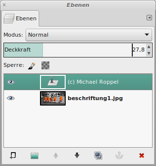

Ein Bild beschriften
Auf dem Bild soll ein Copyright-Vermerk angebracht werden. Hierbei ist
ein Bereich zu suchen, auf dem der Text gut zu lesen ist. Weiße Schrift
auf hellem Grund oder schwarze Schrift auf dunklem Grund sind nicht gut
lesbar.

|
Abb.
1: Das Bild soll einen Copyright-Vermerk erhalten
|
Im Werkzeugkasten gibt es das Text-Werkzeug. Schriftart und Größe
sollten zunächst festgelegt werden. Ebenso ist die Schrift-Farbe zu
wählen.

|
Abb.
2: Das Text-Werkzeug
|
Nach einem Klick in das zu bearbeitende Bild kann der Text eingegeben
werden:

|
Abb.
3: Der Text wird in einer Textbox eingegeben
|
Die Textbox wird dann noch an den endgültigen Platz gezogen.

|
Abb.
4: Das Bild mit eingefügtem Text
|
Damit der Text nicht so hart und dominierend erscheint, kann er über
den Deckkraftregler ausgeblendet werden. Bildteile scheinen so hindurch
und der Text wirkt wie ein Wasserzeichen.

|
Abb.
5: Über die Deckkraft kann der Text ausgeblendet werden
|
Der Schriftzug wird als neue Ebene eingefügt und kann mit der Maus
verschoben werden. Nachdem das Bild zusammengefügt wurde, ist die
Bearbeitung abgeschlossen.
|
Abb.
6: Das Bild mit Copyright-Vermerk
|
© 2009-2017 Michael Roppel